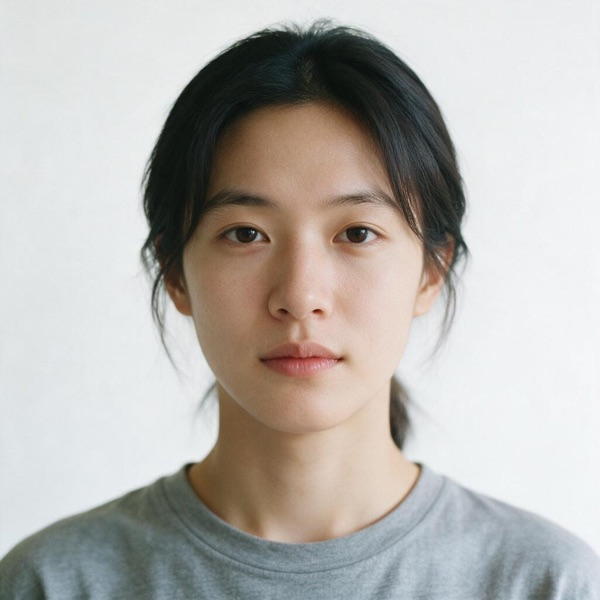
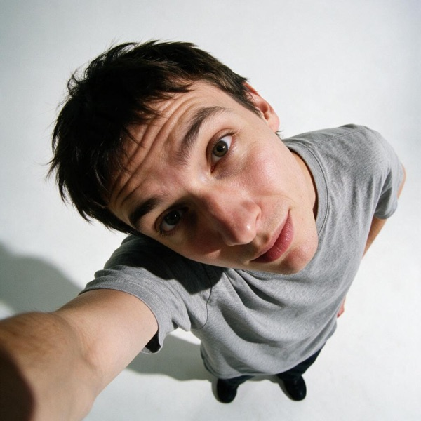

Introdução
Para gerar seus retratos incríveis, você precisa enviar 8-12 fotos suas que sirvam como referência. A qualidade dessas fotos é fundamental: quanto melhor a entrada, melhor será o resultado final.
Resumo Rápido
Quantidade: 8 a 12 fotos
Fundo: Branco ou cinza claro
Luz: Natural (perto de janela)
Roupas: Básicas, sem logos
Posição: Câmera ao nível dos olhos
Expressões: Sorrindo, sério, pensativo
Posicionamento Profissional
A regra de ouro: câmera ao nível dos seus olhos, não selfie com braço esticado. Isso remove distorção e garante fidelidade ao seu rosto real.
Correto

Câmera ao nível dos olhos, ~1m de distância. Postura neutra.
Incorreto

Selfie com braço esticado. Distorce o rosto.
Se você só tem câmera frontal (selfie)
Tire normalmente, mas VIRE a foto horizontalmente antes de enviar. Seu rosto não fica espelhado no PRISMA, mas ajuda você a se reconhecer melhor.